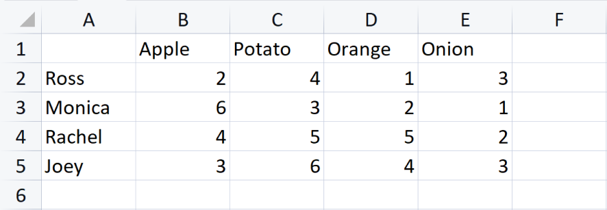

{% extends "layout.html" %}
{% block title %}How To Use{% endblock %}
{% block main %}
Let's go through an example together.
Here we see a matrix about food purchases.
Each cell represents how much an individual has
bought a certein type of food.
Let's assume that we don't want to know the amount of
food bought for each individual. But we want to know, as a
group how much men and women has bought a certein
type of food.
- Create MEN group
- Add Ross and Joes
- Create WOMEN group
- Add Monica and Rachel
- Show men-woman-food matrix.
If we export this you can see that all the cells
are summed together automatically.
And if we want to group foods together as fruits and
vegetables we do it like so.
- Create FRUITS group
- Add apple and orange
- Create VEGETABLES group
- Add potato and onion
Now we export the finall matrix the final matrix:
- Show final matrix.
Here's our matrix.

How to enter Coordinates

Submit like this.

Lets group men
GIF FOR CREATE MEN
 GIF FOR ADD/REMOVE
GIF FOR ADD/REMOVE
 RESULT
RESULT
Lets group women

RESULT

Let's group fruit and vegetables too.
FINAL RESULT

{% endblock %}